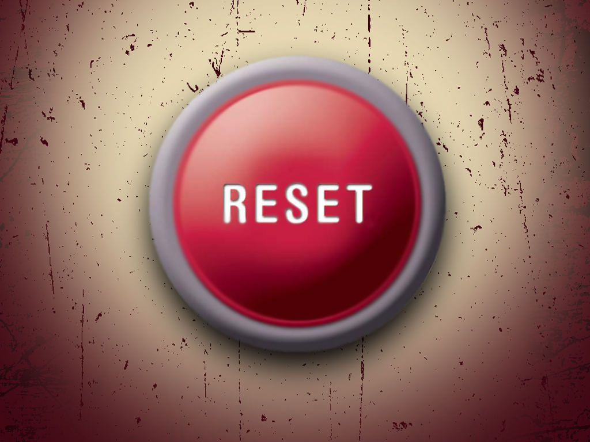

| Home | About | Blog | Books | Social Media |

I've been humbled over the past two years. Taken down a notch, then two or three notches and then too many notches to remember.
Let me explain
Most of you don't know me from before, but in the years 2008 to around 2013 I was on top of my world.
I had built an online business, based on high technology, that provided an income equivalent to a mid-career software developer. While I had a full time income, work was flexible. I could work 80 hours a week, 20 hours or zero hours a week.
Work never interfered with travel plans. If something needed attention I could pop open my laptop and take care of business no matter where I was.
After my daughter was born, I was around to help out and experience firsthand all the big moments. Work, if you could even call what I did work, was more like an adventure and a fantastic hobby that happened to support me.
In short, I had the lifestyle that you may have heard about from the online gurus like Tim Ferris, Pat Flynn and the guys at Internet Business Mastery.
In hindsight, the business didn't just evaporate overnight. At the mid-point of that five year period, there came a point where my active income (from things like consulting and teaching) surpassed my passive income (apps, books and websites).
I had learned, second hand, from Gary Vaynerchuk and his ilk that hustle could get you far. By year three, things were going better than ever but my hustle masked some big problems.
By 2013 and 2014, my passive income was gone and my active income was solely dependent on a handful of unreliable clients.
The technical skills that had made me one of the few people in the world who could make iPhone apps in 2008 were severely out of date in 2014.
In 2013, I was faced with a hollowed out business and I had to make a decision: recreate everything about the business and essentially start from stratch or just let it go.
My business only worked when my apps, my consulting (teaching) and my books all pulled their weight. To continue, I would need to rebuild all of that all at the same time to have any hope of maintaining an income.
Not only did I let it go, I burned it all down. I took down my websites, pulled my iPhone apps, took down training programs, changed my LinkedIn, canceled my Apple Developer account, closed my bank accounts and dissolved the LLC.
Here's why
While I had written books and attended the WWDC conferences throughout those years I hadn't been actively developing apps since 2011. The tools have been getting major updates every six months.
The app I slaved over in 2008 (the one that launched my company) could be built in a day or two with the latest technology.
Even the programming language had changed completely, we no longer used Objective-C to make apps. Apple invented a new programming language called Swift and this would quickly become the gold standard in the summer of 2014.
That is, until 2015 when Apple released Swift 2…
My original app, Wine Pad, was one of the first 800 apps available in July 2008. While it wasn't available the very first day of the new Apple App Store it made it in that first week.
I ended that year with 9 iPhone apps available, two of which where featured on the App Store. Things were going real well.
Today, Wine Pad would have to complete with over 1.4 million apps.
My first app cost 4.99 and people thought I wasn't charging enough. At that time software usually cost about 50 bucks.
When I pulled my the successor app to Wine Pad, Tasting Notes, customers were bitterly complaining about Tasting Notes 2.99 price tag. They complained when I temporarily reduced the price to .99…
It was the same story for the books and training I was selling. These things always did way better than my apps, but as iOS became popular and people realized that learning iOS wouldn't get them rich overnight the demand slowed for these products as well.
“In short, making iPhone apps was a wave and I was briefly on the crest of that wave. Then, it just washed me away.”
Once I made my decision to let my business go I had to find a job. When I started this task in the early Spring of 2014 I thought that I would have my pick of jobs.
I honestly expected to be immediately snatched up as an experienced iOS software developer or business developer or something. I wrote books on this for fucksakes!
It didn't happen. While I got interviews, I didn't get offers. The already niche pool of iOS job opportunities ran out.
This was humilating
After all - I had been touting myself as an expert just a few months ago. Now I couldn't get a job anywhere near iOS and I had let my skills stagnate. Things had caught up with me.
I was starting to feel desperate
At one point, I was passed over for a job that had a salary of just half of what I was making in my online business. I reached out to someone who I thought was a trusted former manager who I did great work with, but got snubbed. An exciting opportunity as a technical trainer never got funded.
And so on and so on until I came close to hitting rock bottom.
After about 9 months of this, I did end up with two strong job offers: one at Apple as a writer (whelp) and one at College Board. Both jobs were uniquely matched to my skills but in dramatically different ways.
In the end, I had to pass on the opportunity at Apple bacause I just couldn't afford to live in Cupertino. This was it's own system shock - the team at Apple was truly great and I was devestated when I couldn't make it work.
The job I ultimately took combined my skills as a data analyst along with my experience with interactive tools. It's a good job, good benefits and good people.
It's basically a shinier version of the 9-5 job I “escaped” 6 years ago. Working at this job has come at the cost of a whole lot more notches that I won't get into right now.
Suffice it to say, going from an indy Apple powered startup world to a Windows based corporate non-profit has been a culture shock…
This past year has been about survival. I have fallen very far over the the past two years and I am only just now starting to rebuild. Life is slowly getting back on track.
While I'm grateful for my job, I have the same problems here that I did in my last job in 2007. I'm essentially a (now wannabe) tech entrepreneur in a job that's not quite right. I wanted to give you my story so you would have the context for the current decision that I'm considering.
I mean literally… An old friend from my past life's mastermind group called me out of the blue to brainstorm WordPress plugins. This was Tim from Renegade Dad.
So Tim is relentless <- working on various online businesses since before I started and he has continued since after I burned mine to the ground. He has done this in spite of working 9-5 jobs, starting a family and dealing with everything else that middle age dads deal with.
My conversation with Tim quickly moved from WordPress plugins to online business.
This conversation brought me right back to those not so old days and really got me thinking. The seed was planted…
As much as I miss my business, there are things about it that I absolutely hated. I can live without the monthly hustle to earn enough to pay the bills and I can certainly live without the grueling 3-12 SEO Optimized bullshit blog posts I had to put out every single week to stay relevent in the Googled world.
I could not stand the realities of marketing that naturally push you into grayer and grayer territory. There are things that I have done and said that I'm just not that proud of.
The neccessities of online business took me away from the core reason I went into online business in the first place.
This was business as usual, and that's not a place that I want to go back to.
But, how about business as hobby?
Having an online business did allow me certain freedoms.
But, it took away the biggest freedome of all: the ability to create without economic constraints.
I went into business to build apps. In the end, I am a builder and I am most happy when building. This is why I like websites, software and writing.
Being in business made me a slave to myself. I could only justify my limited time to build things that I thought would make money. I couldn't afford to stop.
In the beginning of my business, there was a six month stretch where I just built apps. I was living the Indy Mac Developer lifestyle and it was great.
It ended and things got to the point where my development was outsourced because I couldn't justify taking myself away from projects that made real money. I was funding other people to do the work that I wanted to do by focusing on things that I didn't really like to do like teaching and consulting.
What I really loved was the geeky stuff: building iOS apps and blogging.
I am thinking about rebuilding the app that was so close to the online identity that I used to have: Tasting Notes. This app was the juiced up and optimized version of my original app. Also, I want to continue to blog and get plugged back into the Apple Developer community.
What I'm worried about is:
Will this be as fun as I think it is considering I already have a pretty demanding day job?
Will I follow through or end up just disappointing myself in a few weeks?
Am I just in denial about the reality of my life today?
This is my debate: do I want to emotionally reinvest into this thing?